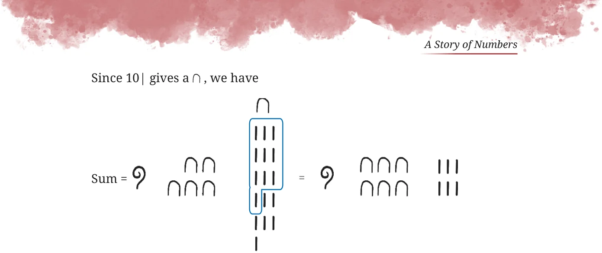

- 1.Write the following numbers in the above base-5 system using the
symbols in Table 2: 15, 50, 137, 293, 651.
- 2.Is there a number that cannot be represented in our base-5 system
above? Why or why not?
- 3.Compute the landmark numbers of a base-7 system. In general, what
are the landmark numbers of a base-n system? The landmark numbers of a base-n number system are the powers of
n starting from \(n = 1\), n, n , n ,...

Advantages of a Base-n System
What is the advantage of having landmark numbers that are all the powers of a number? To understand this, let us perform some arithmetic operations using them.
Example: Add the following Egyptian numerals:
Let us find the total number of | and and group them starting from the largest possible landmark number. It has a total of -
15 and 15 |.
Since 10 gives the next landmark number , the sum can be regrouped as -
Sum =
